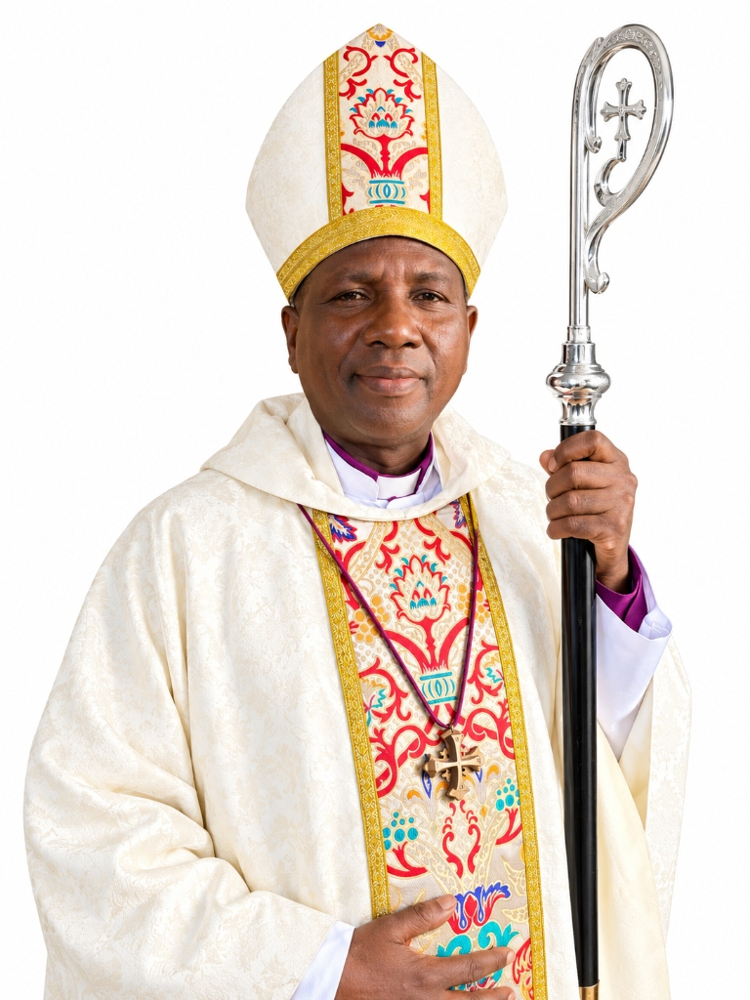
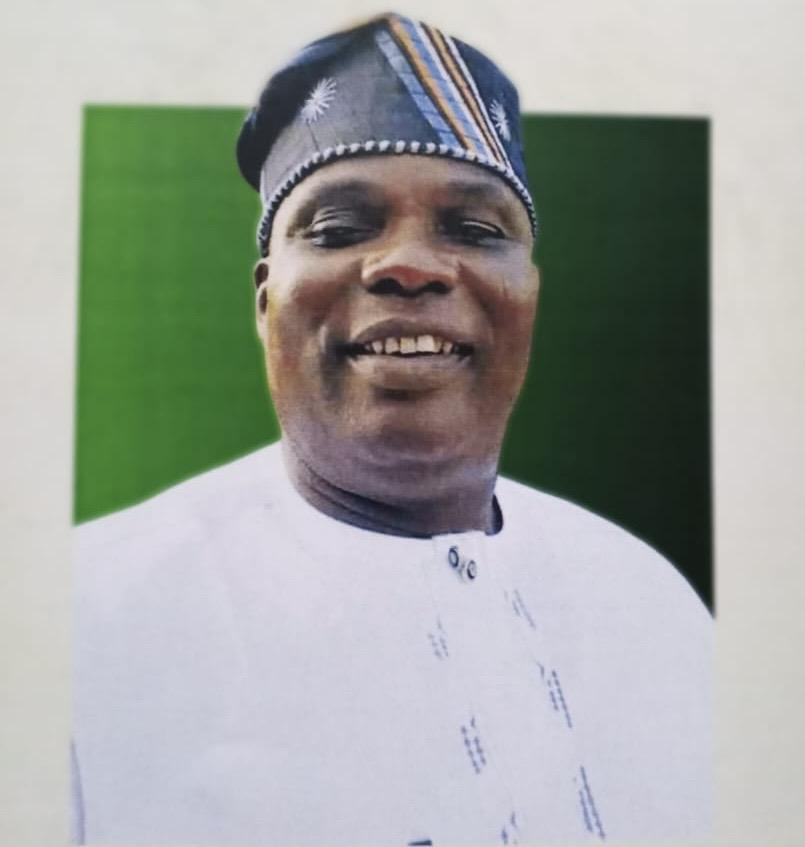

Heaven's Light Our Guide
Citadel of Grace & Love
Welcome to the official portal of The African Church, Ifo Diocese — inaugurated on April 7th, 2018. Under the episcopal leadership of RT. REV M.O OLADIPUPO ESQ. AICMC.
Diocesan Headquarters - 77/79 Coker Road, Ifo

Diocesan Bishop Ifo Diocese and Provost of The African Church Emmanuel Cathedral, Ifo.
Grace and Peace to you in the name of our Lord Jesus Christ. The Diocese of Ifo — the Citadel of Grace and Love — was inaugurated on April 7th, 2018, committed to spreading the Gospel across our five archdeaconries, edifying the body of Christ, and raising godly families through faith and service.
Cathedral: The African Church, Emmanuel Cathedral, 77/79 Coker Road, Ifo, Ogun State
Direct Telephone: 08023414109
Bishop's Email: oladipupomichaelolusola@gmail.com
Bishop's Chaplain: Rev'd Fashina Julius P. (07032287377)
The African Church was established on 13th October 1901 as an indigenous church, holding fast to orthodox Christian faith with the Holy Bible as the ultimate guide. The Ifo Diocese was formally inaugurated on 7th April 2018.
Dedicated clergy and lay leaders administering the ecclesiastical and operational affairs of Ifo Diocese.

The African Church Ebenezer Parish, Sango
08023528765| Portfolio | Officer | Parish Base | Telephone |
|---|---|---|---|
| Secretary | Chief Adebiyi Emmanuel Adefenwa | Salem Parish, Ososun | 08033467761 |
| Asst. Gen. Secretary (Clergy) | Rev'd Can. C.O. Ojo | Christ Parish, Mosafejo | 08066073500 |
| Asst. Gen. Secretary (Laity) | Bro. Gbenga Adegbola | Emmanuel Cathedral, Ifo | 08025314818 |
| Treasurer | Bro. Bidemi Buari | Emmanuel Cathedral, Ifo | 07084883746 |
| Financial Secretary | Chief Sunday Oguntayo | The African Church | 08064625109 |
| Legal Adviser | Barrister Adebanjo Adeliyi | Christ Parish, Mosafejo | 08023033396 |
| Medical Adviser | Amb. Taiwo Bolaji Serifat | Diocesan Headquarters | 08066612477 |
| Education Secretary | Comr. Ibukunoluwa Peter Olaide | The African Church | 08034718858 |
| Statistician | Chief Folorunsho Abayomi Hezekiah | The African Church | — |
| Auditor I | Mrs. Oloyede Omorin Eunice | Emmanuel Cathedral, Ifo | 08163705246 |
| Auditor II | Chief D.O. Majaro | The African Church | 08023380914 |
| Publicity Secretary | Rev'd Can. S.F. Zannus | Emmanuel Cathedral, Ifo | 08037185799 |
Fostering vibrant ministry across our women and youth populations.
The Diocese of Ifo administers churches across five regional archdeaconries in Ogun State.
Search our full database of 37 parishes, annexes, and proposed parish stations across the Diocese of Ifo.
| Parish / Church Station | Archdeaconry | Location | Vicar / Minister in Charge | Contact |
|---|
Your faithful tithes, offerings, and donations empower the evangelical missions and welfare programs of the diocese.
Emmanuel African Church Cathedral:
Diocesan Headquarters - 77/79 Coker Road, Ifo, Ogun State, Nigeria
The Diocesan Bishop:
RT. REV M.O OLADIPUPO ESQ. AICMC
Telephone: 08023414109
Email: oladipupomichaelolusola@gmail.com
The Bishop's Chaplain:
Rev'd Fashina Julius P. (07032287377)
Office Hours:
Monday – Friday: 9:00 AM – 4:00 PM